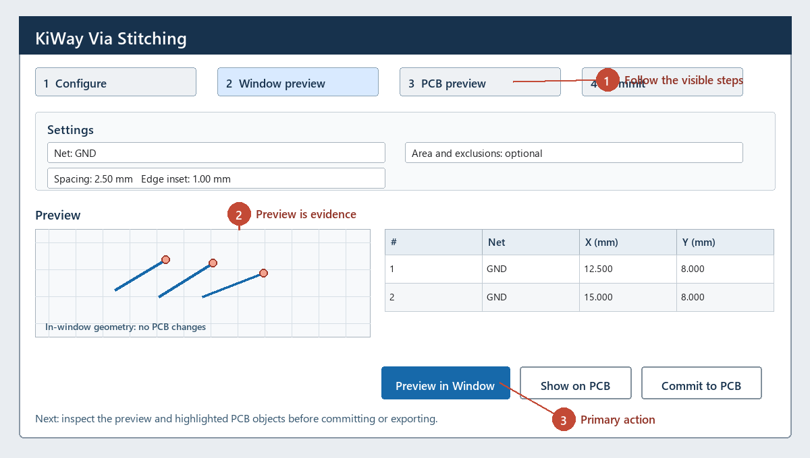

KiWay Via Stitching
Annotated interface walkthrough
The numbered cues below match the visible workflow in the plugin. A preview is the review evidence; committing or exporting is the final step.

Creates a configurable via grid for a selected net or no-net stitching pattern.
Cross-selection: Preview and Generate automatically select the created vias. Use Select Generated to return to the most recent result. Use Use Selected Items Bounds to constrain a grid to a PCB Editor selection.
Workflow
- Select a net, then set spacing, inset, drill, and diameter.
- Use universal board bounds or select objects in PCB Editor and load their bounds.
- Keep exclusion checks enabled for parts, tracks, zones, and drawings unless intentionally overriding them.
- Preview, inspect the selected vias, Generate, then run DRC.
Troubleshooting
- Very few vias: exclusions may cover most of the target region; disable one at a time to diagnose.
- DRC errors: increase spacing/inset and check keepouts and zone clearances.
- No net: save the board and confirm a pad is assigned to the target net.